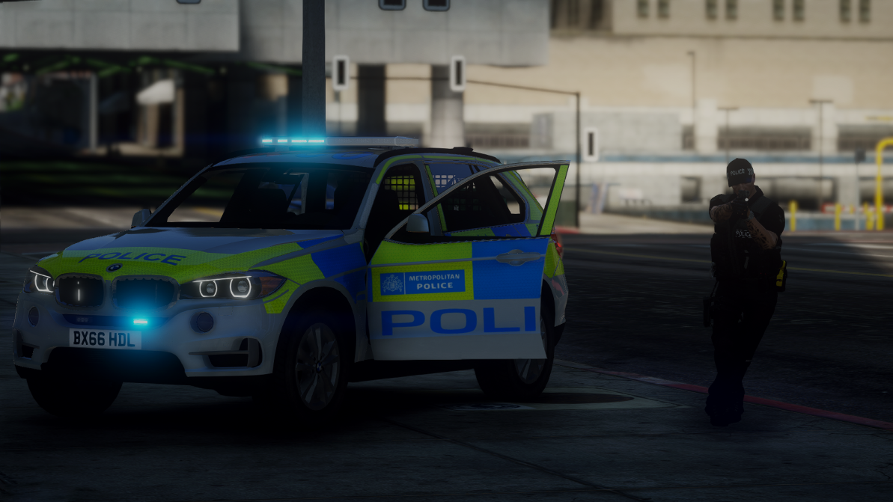
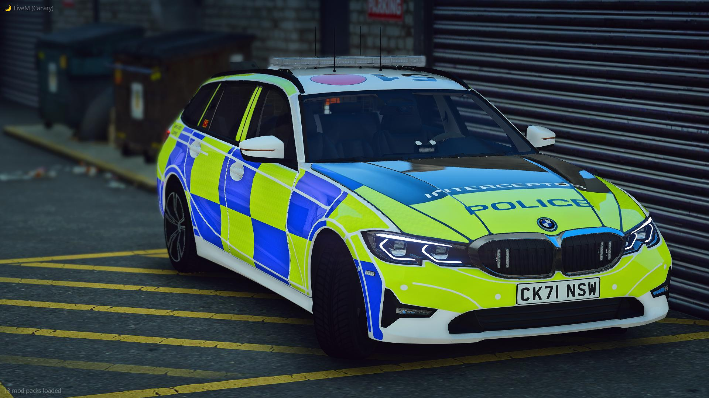

<!DOCTYPE html>
<html>
<head>
<meta name="viewport" content="width=device-width, initial-scale=1">
<!-- Narcotic Logo -->
<link rel="icon" href="img/blank_narcotic.png">
<!-- Bulma CSS -->
<link rel="stylesheet" href="https://cdn.jsdelivr.net/npm/bulma@0.9.3/css/bulma.min.css">
<!-- CSS Style -->
<link rel="stylesheet" href="css/style.css">
<!-- Google Fonts -->
<link href='https://fonts.googleapis.com/css?family=Poppins' rel='stylesheet'>
<title>Narcotic City Roleplay ┃ MET Police Information </title>
</html>
</head>
<body>
<!-- top web header -->
  <div class="header">
  <a href="https://discord.gg/8MwEQVTvpw" class="logo" target="_blank">Narcoitc City Roleplay ┃ Metropolitan Police Information</a>
  <div class="header-right">
    <a href="index.html">Home Page</a>
    <a class="active" href="index_whitelisted.html">Whitelisted Jobs</a>
    <a href="index_contact.html">Contact Us</a>
    <a href="index_about.html">Our Team</a>
    <a href="index_joinus.html">Join the City!</a>
  </div>
</div>

<br>
<p class="title">Metropolitan Police Department</p>
<p>London is one of the most diverse cities in the world, it is up to the men and women in blue to keep the street safe. Responding to <br> emergency calls and helping members of the public in distress, keeping it flowing is no easy task, do you believe that you have the knowledge and experience to become part of London's Great Metropolitan Police Deparment</p>
<p><strong>What ranks do we have?</strong></p>
<ul>
  <li>City Police Team</li>
  <li>Roads Police Team</li>
  <li>Marine Police Team</li>
  <li>Armed Police Team</li>
  <li>Organised Crime Unit</li>
</ul>
<br>

<p class="title">Interview Process</p>
<p class="normaltext">Does this sound like something that you would be intersted in? <br> If so then head to our whitelisted jobs link and hvae made a ticket, a member of the police team or one of the staff members will have sent over the link to do your application, applications are required to be detailed and nothing but the truth. Once your application is complete either the chief <strong>O-101 | Callum R.</strong> or <strong>T-102 | Charlie J.</strong> will view the application and get back to you. For people that struggle to complete an application, that is not a problem, there is always the opporunity for you to be given a verbal interview where you are able to give your same ideas and answers by speaking to someone instead of having to fill in an application which can be a struggle for some people.</p>
<br>
<p class="title">After your interview has been accepted</p>
<p class="normaltext">Every officer that join the force has to complete a manditory training course, this will involve general information that you need to know, give the new officer some help as the might not know what to do when it comes to some situations, some officers that join have never done police before so will need to know there <strong>Caution Rights</strong><br> more about that later on. After you have done the "classroom" training you will move on to field training with Real Police Cars and A setup crimminal scene. Your trial period will be next where you will be placed with another officer and take control, the other officer will be there to set in if needed. After the chief or our traning officers feels confident in you been a police officer, you will be allocated your call sign <strong>C-564</strong>for example, you will be handed your equipment, 1x TaserX2, 1x Handcuffs, 1x ASP Baton and be given a vehicle that you drive until your promotion.</p>
<footer class="footer"
  <div class="content has-text-centered"> 
    <p class="footertext">
      <strong>©NCRP</strong> By Narcotic City Roleplay
      
    </p>
  </div>
</footer>
</body>
</html>
